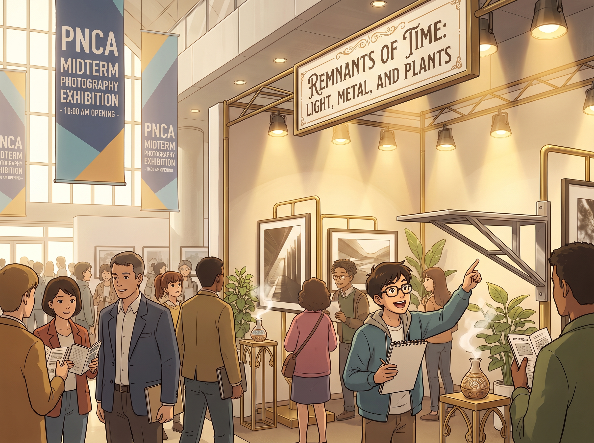

最高榮譽

週五上午十點，太平洋西北藝術學院期中攝影展正式對外開放。
一號展廳內人頭攢動，但最醒目的焦點無疑是東側挑高展位——《時間的殘留物：光、金屬與植物》。與周圍清一色傳統裝裱、黑白極簡的冷淡風展位不同，這裡從視覺、觸覺到嗅覺都形成了一股強大的引力場。
展位前早已被層層疊疊的學生、導師以及受邀而來的西雅圖畫廊策展人圍得水洩不通。
一、沉浸式多維體驗
人群剛踏入展區五米範圍內，空氣中流動的冷萃薄荷與迷迭香氣息便讓人精神一振。黃銅擴香皿在溫暖的射燈下泛著微光，翠綠的陶盆植物與冷硬的灰色水泥展牆形成了強烈的生命張力。
「這完全打破了傳統攝影展『只能遠觀』的單一維度，」一位純藝術系的研究生推著眼鏡，驚嘆地指著展架，「金屬懸臂支架的粗獷線條直接延伸了照片裡機械打磨的張力，植物的氣味又把人拉回了拍攝時的現場溫度。」
二、現場四大核心的各司其職
Max 穿著乾淨的白襯衫，黑框眼鏡後的眼睛亮晶晶的。面對圍成一圈提問的低年級學弟學妹與苛刻的評委，她不再有絲毫膽怯，語氣篤定而溫和地解析著暗房銀鹽顆粒如何捕捉光影在金屬和露水上的停留痕跡。
Victoria 換上了一身高定修身西裝，手裡拿著香檳杯，以驚人的優雅與專業度遊走在幾位西雅圖知名獨立畫廊總監之間。她用三言兩語精準拆解了整套展覽的策展邏輯，順手遞出印有 Loft 聯絡方式的燙金名片，甚至當場為 Max 敲定了下半年青年藝術雙年展的初審推薦名額。
Kate 繫著精緻的小圍裙，守在互動展台旁。每當有參觀者被那排帶著手工齒孔標籤的「波特蘭天台微風」精油吸引，她便微笑著遞上一張印有植物手繪插畫的試香卡，溫柔講解著天台草本的培植過程，收穫了一大批被治癒的粉絲。
雖然被 Victoria 強制要求穿上了乾淨的深黑皮夾克，Chloe 一頭藍髮和工裝靴依舊搶眼。她靠在展位最外側的重型黃銅支架旁，手裡轉著那把黑檀木瑞士小刀，對著每個試圖伸手暴力觸摸懸臂結構的男生挑眉冷哼：「輕點碰，兄弟，雖然它能扛住一噸拉力，但手工拋光面被你摸花了老娘可要收工時費。」
三、導師組的現場最高評定
中午時分，由海因斯教授帶領的五人評審團在展位前駐足了整整二十分鐘。
「這不是單純的期中課業匯報，」評審委員會主席、資深當代藝術評論家克萊因教授摘下帽子，對著 Max 微微頷首，「妳把日常生活的碎片——廢棄零件、天台泥土、朋友的呼吸與勞動，轉化為了一種極具重量的時間雕塑。Caulfield 同學，妳的展位拿到了本屆展覽的最高榮譽評級。」
人群中爆發出一陣熱烈的掌聲與歡呼。
Chloe 毫不顧忌周圍西裝革履的體面人群，直接吹了一聲響徹展廳的口哨，一把將 Max 抱了起來在空中轉了半圈；Kate 激動得眼眶泛紅、拍紅了手掌；而站在畫廊總監身旁的 Victoria 則迅速抿了一口香檳，優雅地揚起下巴，極力掩飾著嘴角那抹得意到極點的燦爛笑容。
陽光穿過 PNCA 巨大的玻璃天頂灑在展位上，將胡桃木相框、黃銅零件與四個女孩的身影映照得無比耀眼，這場由車間、暗房與天台共同孕育的展覽，成了這個夏天波特蘭藝術界最難忘的一抹光芒。